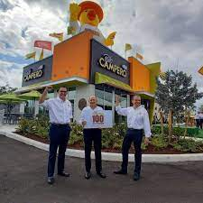
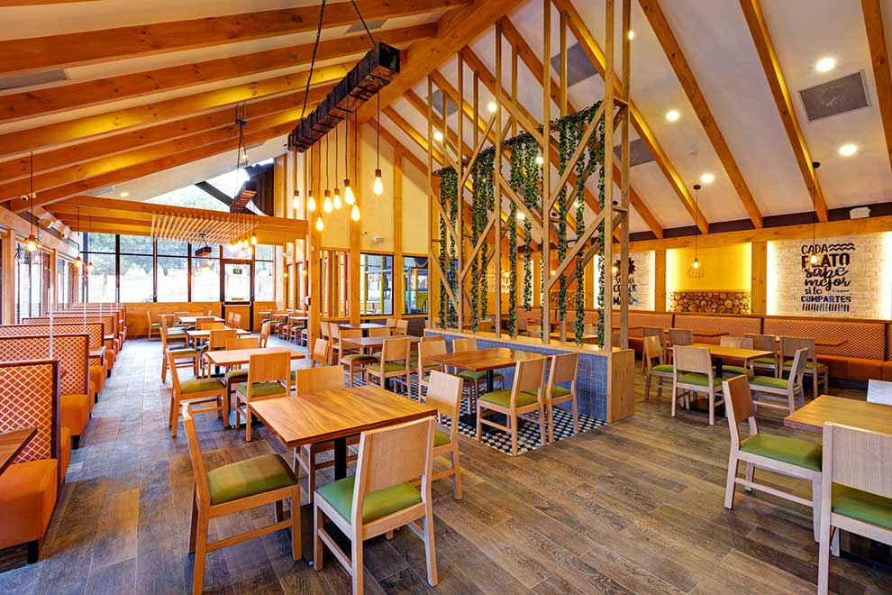
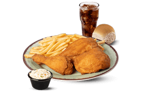
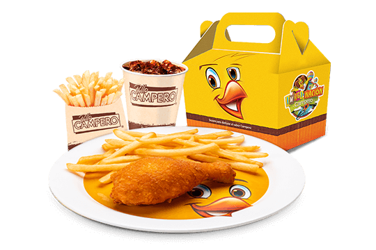

🌍 Presencia Internacional
Desde su fundación en Guatemala en 1971, Pollo Campero ha expandido su presencia a nivel internacional, contando con más de 350 restaurantes en 13 países. Esto incluye Estados Unidos, El Salvador, México, Honduras, Colombia, y otros países de Centroamérica, así como en regiones de Asia y Europa.

🏠 Ambiente de los Restaurantes
Diseño moderno y acogedor: Los locales de Pollo Campero cuentan con un diseño contemporáneo y colorido que refleja la identidad cultural de Guatemala, pero adaptado a las necesidades de cada región donde se encuentra.
Espacios cómodos: Ya sea que prefieras un ambiente familiar, informal o rápido, Pollo Campero se asegura de que cada visita sea agradable y relajante.
Comodidad y accesibilidad: Los restaurantes están equipados para ser cómodos, accesibles, y brindan zonas de estacionamiento amplias.

🍽️ Experiencia Gastronómica
El menú de Pollo Campero se caracteriza por sus sabrosos pollos fritos, pero también por una variedad de platos que incluyen:
- Ensaladas frescas.
- Pechugas a la parrilla.
- Hamburguesas.
- Complementos como papas fritas, guarniciones latinas, y más.
La cocina está centrada en ofrecer un sabor único y auténtico, utilizando ingredientes frescos y un toque de la tradición guatemalteca.

